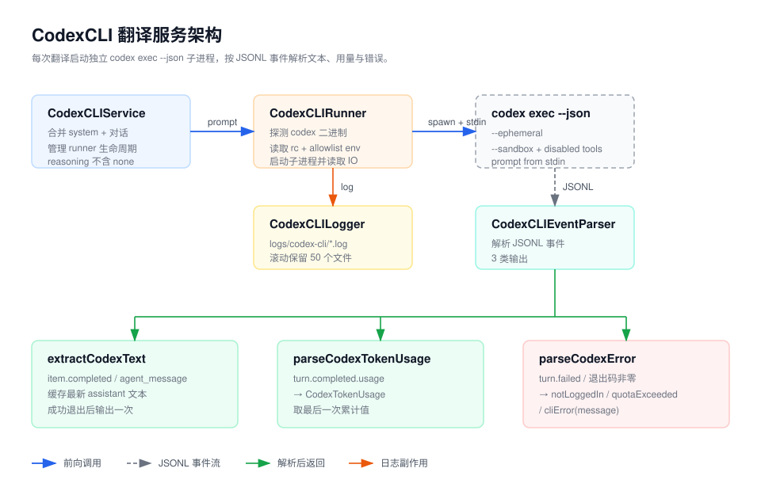

Service / CodexCLI
CodexCLI 目录概览
CodexCLI 把本地 codex CLI 接入 Easydict 的
StreamService 翻译链路。
概览
设计目标与 ClaudeCode 一致：保留 OpenAI Codex 自有的认证机制
（~/.codex/auth.json、CODEX_API_KEY 或
CODEX_ACCESS_TOKEN），不做任何
OAuth 或代理绕行；Runner 会在父进程环境优先的前提下，从登录 shell 补齐
PATH、CODEX_HOME、API key、access token、
custom CA 和代理 allowlist；
每次翻译都启动一个独立的
codex exec --json 子进程，无跨查询会话状态。

关键组件
-
CodexCLIService.swift接入StreamService的contentStreamTranslate入口，把系统 prompt 和对话消息合并成单条 prompt（codex 没有独立的 system prompt 标志），通过 stdin 交给 runner，并管理 runner 生命周期； 推理等级只暴露 Codex 官方支持的 model reasoning values。 -
CodexCLIRunner.swift通过登录 shell 的which codex探测二进制路径并缓存，用Process启动子进程并并行读取 stdout / stderr。子进程环境保留 父进程变量，并只从登录 shell 补齐 Codex auth、home、custom CA 与代理 allowlist； zsh/bash 会先静默读取~/.zshrc/~/.bashrc。线程安全的cancel()用于在新查询替换或用户取消时立刻终止子进程。 -
CodexCLIEventParser.swift解析 JSONL 流式事件：item.completed（agent_message）→ 助手文本，turn.completed.usage→ token 用量，turn.failed/error→ 类型化错误。error字段同时支持字符串和{message,...}对象两种结构（Codex 0.128.x 实际行为）。 -
CodexCLIError.swift定义notInstalled/notLoggedIn/quotaExceeded/cliError四种错误类型，全部携带本地化文案。 -
CodexCLILogger.swift把每次调用的 stdout/stderr/exit code 写入Application Support/<bundle>/logs/codex-cli/， 最多保留 50 个文件。 -
CodexCLIDebugWindow.swift仅在AGENT_CLI_DEBUG编译标记下提供一个浮动面板实时显示原始事件， 方便调试 CLI 行为变化。
主流程
-
CodexCLIService.contentStreamTranslate拼出包含 system + user 内容的单条 prompt，构造CodexCLIRunner并调用run(prompt:)。 -
Runner 在后台
Task.detached中探测二进制并启动子进程，参数为exec --json --skip-git-repo-check --ephemeral --sandbox read-only -C <tmp> --disable <feature>... -- -，并合并父环境与登录 shell allowlist 环境变量；完整 prompt 写入 stdin，避免长文本触发 argv size limit。 -
stdout 按行解析。
item.completed(agent_message) 的文本会缓存为最新候选结果； 其它事件（thread.started、turn.started、 reasoning 等）暂存到控制缓冲区。 -
子进程退出后，控制缓冲区用于解析
turn.completed.usage与各类失败事件；成功退出时才把最后一条 agent message yield 给StreamService，失败或取消则不输出中间文本。 -
用户取消查询或下一次翻译启动时，
cancel()通过原子状态终止子进程，并用CancellationError进入上层静默取消流程；onTermination 回调释放管道资源。
CLI 调用约定
--json输出 JSONL，每个事件独占一行。--ephemeral跳过会话文件持久化，避免污染~/.codex/sessions。--sandbox read-only作为子进程访问文件系统的兜底边界。-
--disable <feature>显式关闭翻译场景不需要的 Codex 工具能力， 包括 shell、browser、computer、image、apps、plugins、hooks、 multi-agent、tool suggestion 和 workspace dependency helpers。 --skip-git-repo-check允许在中性目录（/tmp）下执行。-C <tmpdir>改变 cwd，避免 codex 读取项目级AGENTS.md。-- -显式让 Codex 从 stdin 读取 prompt，避免长 OCR 或选中文本进入 argv。-
model_reasoning_effort只允许minimal、low、medium、high、xhigh；Codex 不支持none作为模型推理等级。 -
子进程环境以父进程为准；登录 shell 只补齐缺失的
CODEX_API_KEY、CODEX_ACCESS_TOKEN、OPENAI_API_KEY、CODEX_HOME、custom CA 和大小写 proxy 变量，PATH则按父进程在前、登录 shell 在后的顺序去重合并。 - 没有
--system-prompt等价物，所以系统指令统一拼进 prompt 文本。 - Codex 0.128.x 不做增量 streaming，整段助手文本一次性出现。
调试入口
-
翻译结果异常先看
Application Support/<bundle>/logs/codex-cli/*.log的退出码和原始事件。 -
设置页 Codex 配置区域显示二进制安装状态；找不到二进制返回
notInstalled。 -
AGENT_CLI_DEBUG编译下打开 Debug Log 窗口可实时观察事件流， 常用于跟踪 codex 版本升级带来的字段变化。 -
错误分类逻辑见
parseCodexError(fromStdout:stderr:)， 新错误模式只需扩充关键字列表或isFailureEvent。